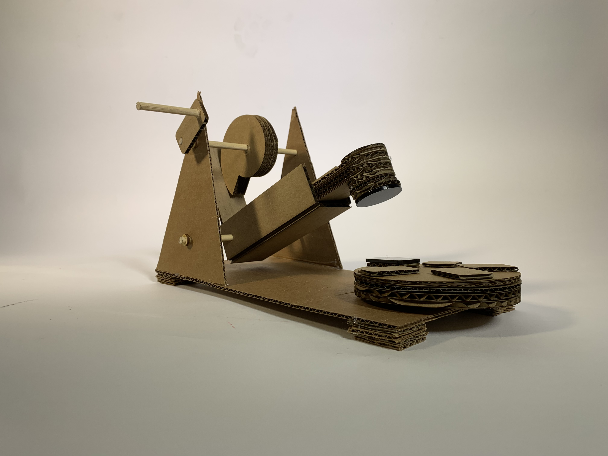
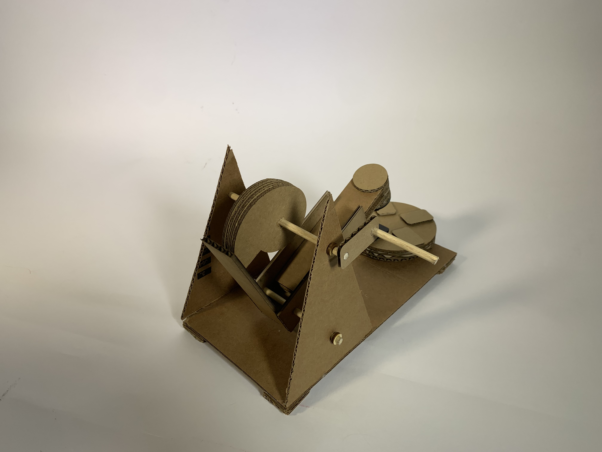
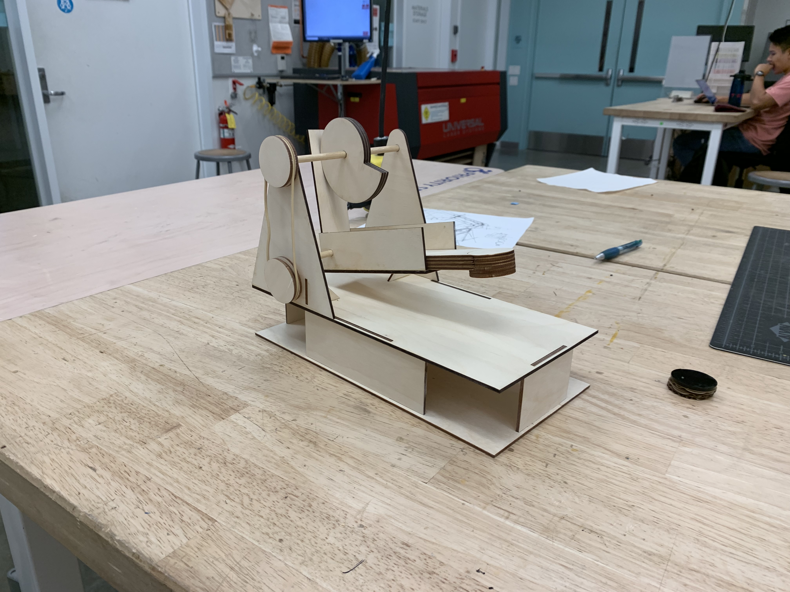
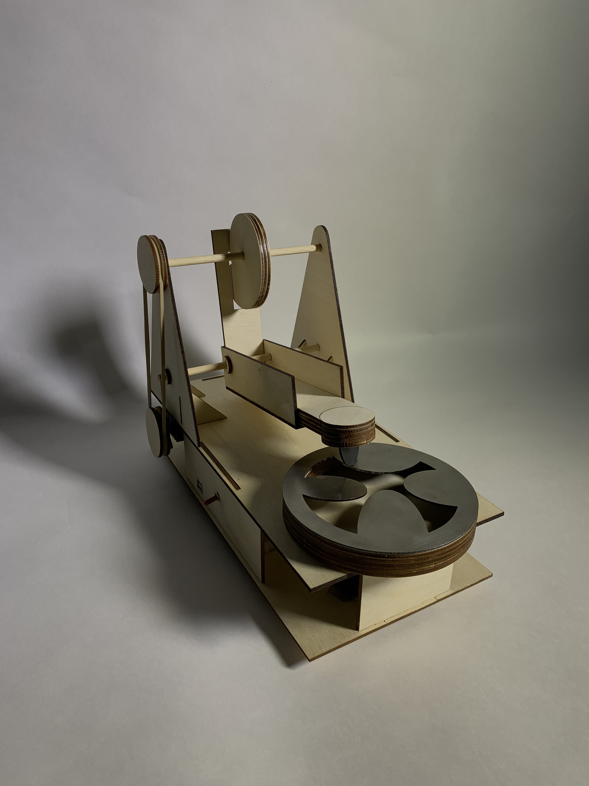
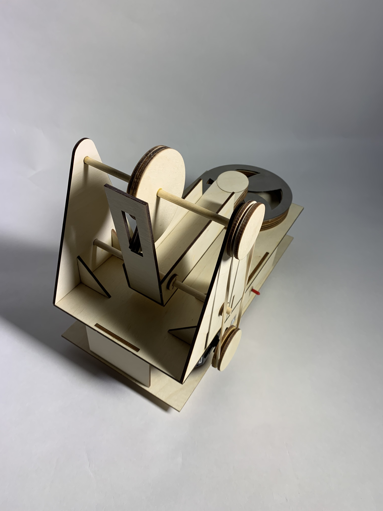
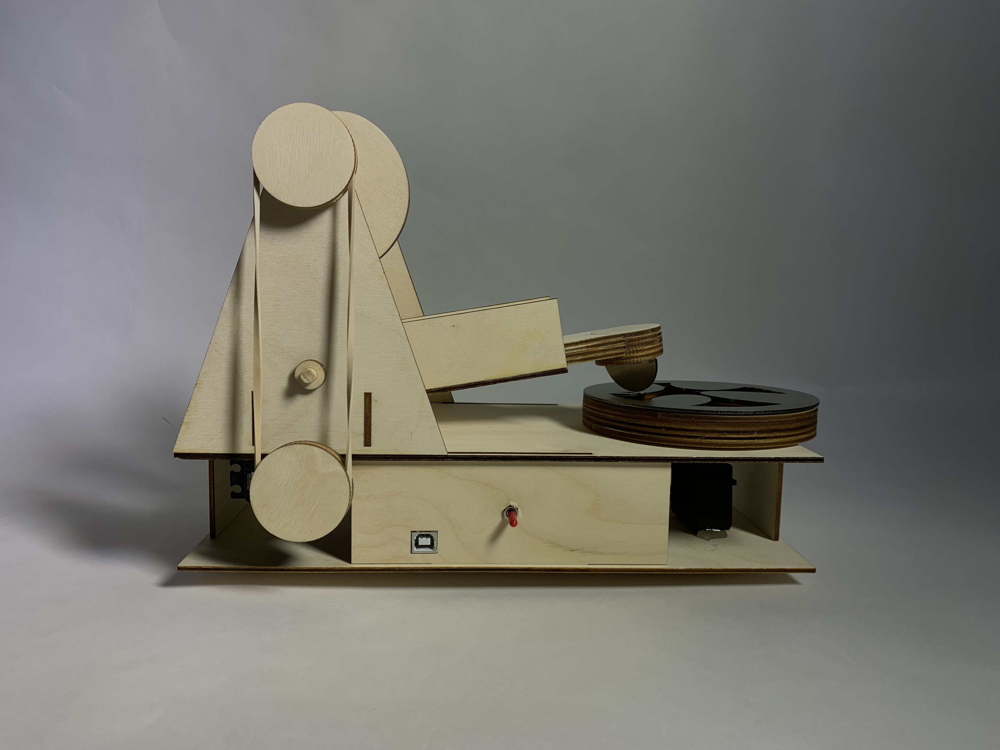
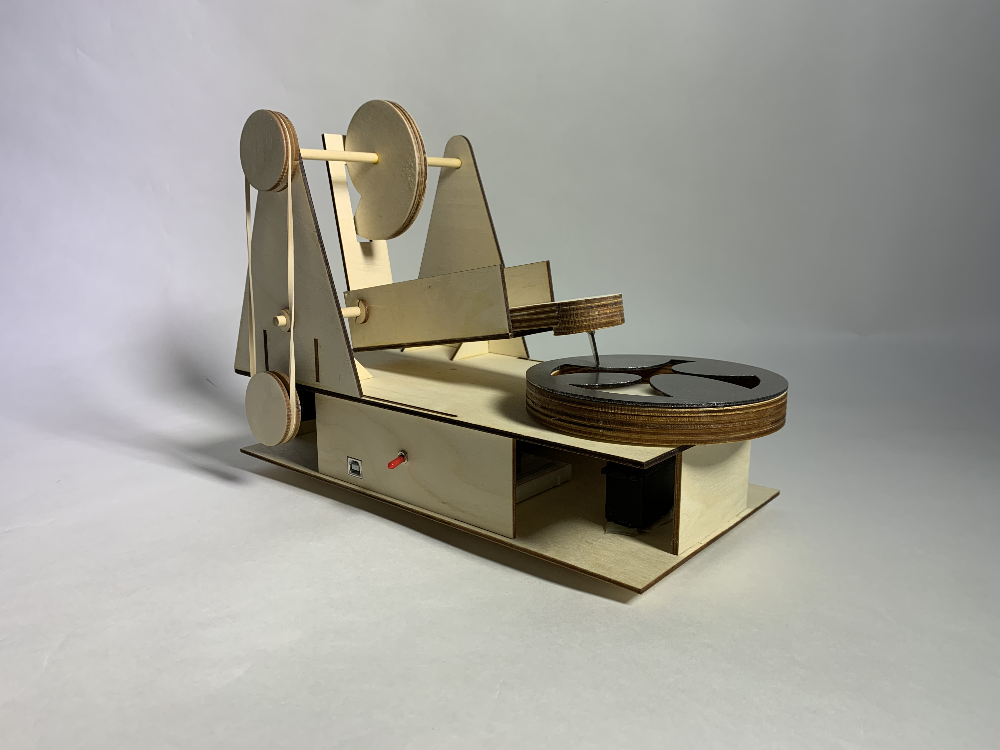

This challenge for this multi-week fabrication project was to design an analogue sound-generating mechanism. Drawing on inspiration from class, my partner and I decided to pursue a Davinci cam hammer design.

Our proof-of-concept was a simple cardbord model with an acrylic striker and rotating “sound board.”

We then laser cut the design, raising the platform so that our Arduino, batteries, breadboard, and servos could fit underneath.

The rubber band pulley worked perfectly so we stuck with it. We then laser cut a metal disk with uniquely shaped “tongues” protruding into the center, the idea being that the tongues would produce different notes when struck.

We also cut a metal striker for the hammer, and cut a slot in the back of the hammer sled so that the hammer could fall more quickly.

Finally, we added a switch to easily power on the servos, and wooden washers to keep the striker sled centered.

